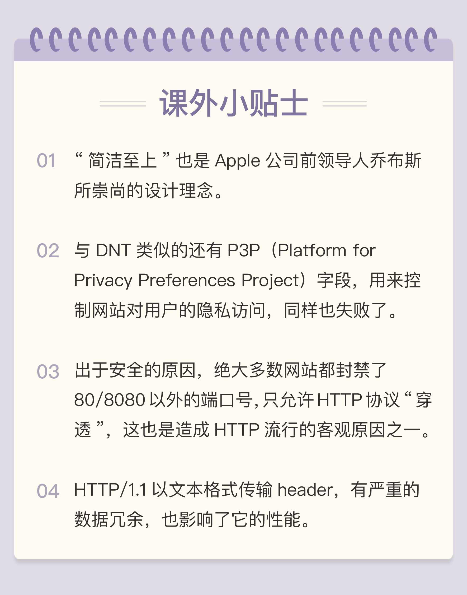

- 00 开篇词｜To Be a HTTP Hero.md.html
- 01 时势与英雄：HTTP的前世今生.md.html
- 02 HTTP是什么？HTTP又不是什么？.md.html
- 03 HTTP世界全览（上）：与HTTP相关的各种概念.md.html
- 04 HTTP世界全览（下）：与HTTP相关的各种协议.md.html
- 05 常说的“四层”和“七层”到底是什么？“五层”“六层”哪去了？.md.html
- 06 域名里有哪些门道？.md.html
- 07 自己动手，搭建HTTP实验环境.md.html
- 08 键入网址再按下回车，后面究竟发生了什么？.md.html
- 09 HTTP报文是什么样子的？.md.html
- 10 应该如何理解请求方法？.md.html
- 11 你能写出正确的网址吗？.md.html
- 12 响应状态码该怎么用？.md.html
- 13 HTTP有哪些特点？.md.html
- 14 HTTP有哪些优点？又有哪些缺点？.md.html
- 15 海纳百川：HTTP的实体数据.md.html
- 16 把大象装进冰箱：HTTP传输大文件的方法.md.html
- 17 排队也要讲效率：HTTP的连接管理.md.html
- 18 四通八达：HTTP的重定向和跳转.md.html
- 19 让我知道你是谁：HTTP的Cookie机制.md.html
- 20 生鲜速递：HTTP的缓存控制.md.html
- 21 良心中间商：HTTP的代理服务.md.html
- 22 冷链周转：HTTP的缓存代理.md.html
- 23 HTTPS是什么？SSLTLS又是什么？.md.html
- 24 固若金汤的根本（上）：对称加密与非对称加密.md.html
- 25 固若金汤的根本（下）：数字签名与证书.md.html
- 26 信任始于握手：TLS1.2连接过程解析.md.html
- 27 更好更快的握手：TLS1.3特性解析.md.html
- 28 连接太慢该怎么办：HTTPS的优化.md.html
- 29 我应该迁移到HTTPS吗？.md.html
- 30 时代之风（上）：HTTP2特性概览.md.html
- 31 时代之风（下）：HTTP2内核剖析.md.html
- 32 未来之路：HTTP3展望.md.html
- 33 我应该迁移到HTTP2吗？.md.html
- 34 Nginx：高性能的Web服务器.md.html
- 35 OpenResty：更灵活的Web服务器.md.html
- 36 WAF：保护我们的网络服务.md.html
- 37 CDN：加速我们的网络服务.md.html
- 38 WebSocket：沙盒里的TCP.md.html
- 39 HTTP性能优化面面观（上）.md.html
- 40 HTTP性能优化面面观（下）.md.html
- 结束语 做兴趣使然的Hero.md.html
- 捐赠
14 HTTP有哪些优点？又有哪些缺点？
上一讲我介绍了 HTTP 的五个基本特点，这一讲要说的则是它的优点和缺点。其实这些也应该算是 HTTP 的特点，但这一讲会更侧重于评价它们的优劣和好坏。
上一讲我也留了两道课下作业，不知道你有没有认真思考过，今天可以一起来看看你的答案与我的观点想法是否相符，共同探讨。
不过在正式开讲之前我还要提醒你一下，今天的讨论范围仅限于 HTTP/1.1，所说的优点和缺点也仅针对 HTTP/1.1。实际上，专栏后续要讲的 HTTPS 和 HTTP/2 都是对 HTTP/1.1 优点的发挥和缺点的完善。
简单、灵活、易于扩展
首先，HTTP 最重要也是最突出的优点是“简单、灵活、易于扩展”。
初次接触 HTTP 的人都会认为，HTTP 协议是很“简单”的，基本的报文格式就是“header+body”，头部信息也是简单的文本格式，用的也都是常见的英文单词，即使不去看 RFC 文档，只靠猜也能猜出个“八九不离十”。
可不要小看了“简单”这个优点，它不仅降低了学习和使用的门槛，能够让更多的人研究和开发 HTTP 应用，而且我在[第 1 讲]时就说过，“简单”蕴含了进化和扩展的可能性，所谓“少即是多”，“把简单的系统变复杂”，要比“把复杂的系统变简单”容易得多。
所以，在“简单”这个最基本的设计理念之下，HTTP 协议又多出了“灵活和易于扩展”的优点。
“灵活和易于扩展”实际上是一体的，它们互为表里、相互促进，因为“灵活”所以才会“易于扩展”，而“易于扩展”又反过来让 HTTP 更加灵活，拥有更强的表现能力。
HTTP 协议里的请求方法、URI、状态码、原因短语、头字段等每一个核心组成要素都没有被“写死”，允许开发者任意定制、扩充或解释，给予了浏览器和服务器最大程度的信任和自由，也正好符合了互联网“自由与平等”的精神——缺什么功能自己加个字段或者错误码什么的补上就是了。
“请勿跟踪”所使用的头字段 DNT（Do Not Track）就是一个很好的例子。它最早由 Mozilla 提出，用来保护用户隐私，防止网站监测追踪用户的偏好。不过可惜的是 DNT 从推出至今有差不多七八年的历史，但很多网站仍然选择“无视”DNT。虽然 DNT 基本失败了，但这也正说明 HTTP 协议是“灵活自由的”，不会受单方面势力的压制。
“灵活、易于扩展”的特性还表现在 HTTP 对“可靠传输”的定义上，它不限制具体的下层协议，不仅可以使用 TCP、UNIX Domain Socket，还可以使用 SSL/TLS，甚至是基于 UDP 的 QUIC，下层可以随意变化，而上层的语义则始终保持稳定。
应用广泛、环境成熟
HTTP 协议的另一大优点是“应用广泛”，软硬件环境都非常成熟。
随着互联网特别是移动互联网的普及，HTTP 的触角已经延伸到了世界的每一个角落：从简单的 Web 页面到复杂的 JSON、XML 数据，从台式机上的浏览器到手机上的各种 APP，从看新闻、泡论坛到购物、理财、“吃鸡”，你很难找到一个没有使用 HTTP 的地方。
不仅在应用领域，在开发领域 HTTP 协议也得到了广泛的支持。它并不限定某种编程语言或者操作系统，所以天然具有“跨语言、跨平台”的优越性。而且，因为本身的简单特性很容易实现，所以几乎所有的编程语言都有 HTTP 调用库和外围的开发测试工具，这一点我觉得就不用再举例了吧，你可能比我更熟悉。
HTTP 广泛应用的背后还有许多硬件基础设施支持，各个互联网公司和传统行业公司都不遗余力地“触网”，购买服务器开办网站，建设数据中心、CDN 和高速光纤，持续地优化上网体验，让 HTTP 运行的越来越顺畅。
“应用广泛”的这个优点也就决定了：无论是创业者还是求职者，无论是做网站服务器还是写应用客户端，HTTP 协议都是必须要掌握的基本技能。
无状态
看过了两个优点，我们再来看看一把“双刃剑”，也就是上一讲中说到的“无状态”，它对于 HTTP 来说既是优点也是缺点。
“无状态”有什么好处呢？
因为服务器没有“记忆能力”，所以就不需要额外的资源来记录状态信息，不仅实现上会简单一些，而且还能减轻服务器的负担，能够把更多的 CPU 和内存用来对外提供服务。
而且，“无状态”也表示服务器都是相同的，没有“状态”的差异，所以可以很容易地组成集群，让负载均衡把请求转发到任意一台服务器，不会因为状态不一致导致处理出错，使用“堆机器”的“笨办法”轻松实现高并发高可用。
那么，“无状态”又有什么坏处呢？
既然服务器没有“记忆能力”，它就无法支持需要连续多个步骤的“事务”操作。例如电商购物，首先要登录，然后添加购物车，再下单、结算、支付，这一系列操作都需要知道用户的身份才行，但“无状态”服务器是不知道这些请求是相互关联的，每次都得问一遍身份信息，不仅麻烦，而且还增加了不必要的数据传输量。
所以，HTTP 协议最好是既“无状态”又“有状态”，不过还真有“鱼和熊掌”两者兼得这样的好事，这就是“小甜饼”Cookie 技术（第 19 讲）。
明文
HTTP 协议里还有一把优缺点一体的“双刃剑”，就是明文传输。
“明文”意思就是协议里的报文（准确地说是 header 部分）不使用二进制数据，而是用简单可阅读的文本形式。
对比 TCP、UDP 这样的二进制协议，它的优点显而易见，不需要借助任何外部工具，用浏览器、Wireshark 或者 tcpdump 抓包后，直接用肉眼就可以很容易地查看或者修改，为我们的开发调试工作带来极大的便利。
当然，明文的缺点也是一样显而易见，HTTP 报文的所有信息都会暴露在“光天化日之下”，在漫长的传输链路的每一个环节上都毫无隐私可言，不怀好意的人只要侵入了这个链路里的某个设备，简单地“旁路”一下流量，就可以实现对通信的窥视。
你有没有听说过“免费 WiFi 陷阱”之类的新闻呢？
黑客就是利用了 HTTP 明文传输的缺点，在公共场所架设一个 WiFi 热点开始“钓鱼”，诱骗网民上网。一旦你连上了这个 WiFi 热点，所有的流量都会被截获保存，里面如果有银行卡号、网站密码等敏感信息的话那就危险了，黑客拿到了这些数据就可以冒充你为所欲为。
不安全
与“明文”缺点相关但不完全等同的另一个缺点是“不安全”。
安全有很多的方面，明文只是“机密”方面的一个缺点，在“身份认证”和“完整性校验”这两方面 HTTP 也是欠缺的。
“身份认证”简单来说就是“怎么证明你就是你”。在现实生活中比较好办，你可以拿出身份证、驾照或者护照，上面有照片和权威机构的盖章，能够证明你的身份。
但在虚拟的网络世界里这却是个麻烦事。HTTP 没有提供有效的手段来确认通信双方的真实身份。虽然协议里有一个基本的认证机制，但因为刚才所说的明文传输缺点，这个机制几乎可以说是“纸糊的”，非常容易被攻破。如果仅使用 HTTP 协议，很可能你会连到一个页面一模一样但却是个假冒的网站，然后再被“钓”走各种私人信息。
HTTP 协议也不支持“完整性校验”，数据在传输过程中容易被窜改而无法验证真伪。
比如，你收到了一条银行用 HTTP 发来的消息：“小明向你转账一百元”，你无法知道小明是否真的就只转了一百元，也许他转了一千元或者五十元，但被黑客窜改成了一百元，真实情况到底是什么样子 HTTP 协议没有办法给你答案。
虽然银行可以用 MD5、SHA1 等算法给报文加上数字摘要，但还是因为“明文”这个致命缺点，黑客可以连同摘要一同修改，最终还是判断不出报文是否被窜改。
为了解决 HTTP 不安全的缺点，所以就出现了 HTTPS，这个我们以后再说。
性能
最后我们来谈谈 HTTP 的性能，可以用六个字来概括：“不算差，不够好”。
HTTP 协议基于 TCP/IP，并且使用了“请求 - 应答”的通信模式，所以性能的关键就在这两点上。
必须要说的是，TCP 的性能是不差的，否则也不会纵横互联网江湖四十余载了，而且它已经被研究的很透，集成在操作系统内核里经过了细致的优化，足以应付大多数的场景。
只可惜如今的江湖已经不是从前的江湖，现在互联网的特点是移动和高并发，不能保证稳定的连接质量，所以在 TCP 层面上 HTTP 协议有时候就会表现的不够好。
而“请求 - 应答”模式则加剧了 HTTP 的性能问题，这就是著名的“队头阻塞”（Head-of-line blocking），当顺序发送的请求序列中的一个请求因为某种原因被阻塞时，在后面排队的所有请求也一并被阻塞，会导致客户端迟迟收不到数据。
为了解决这个问题，就诞生出了一个专门的研究课题“Web 性能优化”，HTTP 官方标准里就有“缓存”一章（RFC7234），非官方的“花招”就更多了，例如切图、数据内嵌与合并，域名分片、JavaScript“黑科技”等等。
不过现在已经有了终极解决方案：HTTP/2 和 HTTP/3，后面我也会展开来讲。
小结
- HTTP 最大的优点是简单、灵活和易于扩展；
- HTTP 拥有成熟的软硬件环境，应用的非常广泛，是互联网的基础设施；
- HTTP 是无状态的，可以轻松实现集群化，扩展性能，但有时也需要用 Cookie 技术来实现“有状态”；
- HTTP 是明文传输，数据完全肉眼可见，能够方便地研究分析，但也容易被窃听；
- HTTP 是不安全的，无法验证通信双方的身份，也不能判断报文是否被窜改；
- HTTP 的性能不算差，但不完全适应现在的互联网，还有很大的提升空间。
虽然 HTTP 免不了这样那样的缺点，但你也不要怕，别忘了它有一个最重要的“灵活可扩展”的优点，所有的缺点都可以在这个基础上想办法解决，接下来的“进阶篇”和“安全篇”就会讲到。
课下作业
- 你最喜欢的 HTTP 优点是哪个？最不喜欢的缺点又是哪个？为什么？
- 你能够再进一步扩展或补充论述今天提到这些优点或缺点吗？
- 你能试着针对这些缺点提出一些自己的解决方案吗？
欢迎你把自己的答案写在留言区，与我和其他同学一起讨论。如果你觉得有所收获，欢迎你把文章分享给你的朋友。

© 2019 - 2023 Liangliang Lee. Powered by gin and hexo-theme-book.